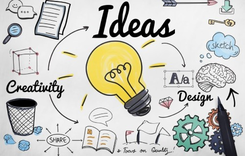

I’m still new to design, but I’m deeply drawn to it — to how it works, how it feels, and how it speaks. I love exploring tools like Figma, learning about user experience, and figuring out what makes things not just look good, but feel right. Being design-curious means asking questions and embracing the process — and for me, that’s half the joy.